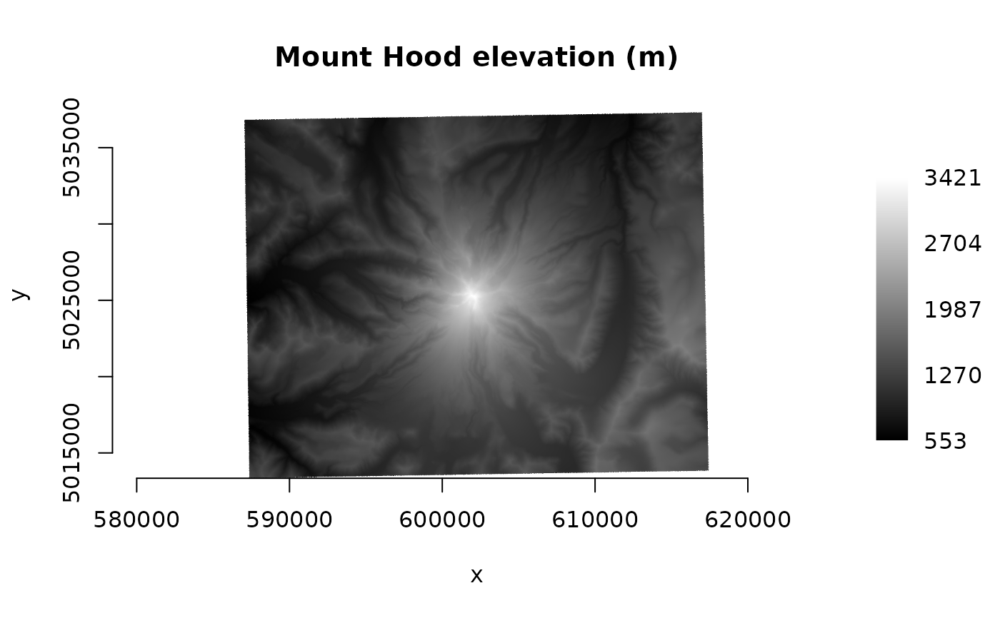

Class encapsulating a raster dataset and its associated raster bands
Source:R/gdalraster.R
GDALRaster-class.RdGDALRaster provides an interface for accessing a raster dataset via GDAL
and calling methods on the underlying GDALDataset, GDALDriver and
GDALRasterBand objects. See https://gdal.org/api/index.html for
details of the GDAL Raster API.
Arguments
- filename
Character string containing the file name of a raster dataset to open, as full path or relative to the current working directory. In some cases,
filenamemay not refer to a physical file, but instead contain format-specific information on how to access a dataset (see GDAL raster format descriptions: https://gdal.org/drivers/raster/index.html).- read_only
Logical.
TRUEto open the dataset read-only (the default), orFALSEto open with write access.- open_options
Optional character vector of
NAME=VALUEpairs specifying dataset open options.
Value
An object of class GDALRaster which contains a pointer to the
opened dataset, and methods that operate on the dataset as described in
Details. GDALRaster is a C++ class exposed directly to R (via
RCPP_EXPOSED_CLASS). Methods of the class are accessed using the
$ operator.
Note
If a dataset object is opened with update access (read_only = FALSE), it
is not recommended to open a new dataset on the same underlying filename.
The $read() method will perform automatic resampling if the
specified output size (out_xsize * out_ysize) is different than
the size of the region being read (xsize * ysize). In that case, the
GDAL_RASTERIO_RESAMPLING configuration option could also be set to
override the default resampling to one of BILINEAR, CUBIC,
CUBICSPLINE, LANCZOS, AVERAGE or MODE (see set_config_option()).
Usage
ds <- new(GDALRaster, filename, read_only=TRUE)
# or, using dataset open options:
ds <- new(GDALRaster, filename, read_only, open_options)
## Methods (see Details)
ds$getFilename()
ds$open(read_only)
ds$isOpen()
ds$getFileList()
ds$info()
ds$infoAsJSON()
ds$getDriverShortName()
ds$getDriverLongName()
ds$getRasterXSize()
ds$getRasterYSize()
ds$getGeoTransform()
ds$setGeoTransform(transform)
ds$getProjection()
ds$getProjectionRef()
ds$setProjection(projection)
ds$bbox()
ds$res()
ds$dim()
ds$getRasterCount()
ds$getDescription(band)
ds$setDescription(band)
ds$getBlockSize(band)
ds$getActualBlockSize(band, xblockoff, yblockoff)
ds$getOverviewCount(band)
ds$buildOverviews(resampling, levels, bands)
ds$getDataTypeName(band)
ds$getNoDataValue(band)
ds$setNoDataValue(band, nodata_value)
ds$deleteNoDataValue(band)
ds$getUnitType(band)
ds$setUnitType(band, unit_type)
ds$getScale(band)
ds$setScale(band, scale)
ds$getOffset(band)
ds$setOffset(band, offset)
ds$getRasterColorInterp(band)
ds$setRasterColorInterp(band, col_interp)
ds$getMinMax(band, approx_ok)
ds$getStatistics(band, approx_ok, force)
ds$clearStatistics()
ds$getHistogram(band, min, max, num_buckets, incl_out_of_range, approx_ok)
ds$getDefaultHistogram(band, force)
ds$getMetadata(band, domain)
ds$getMetadataItem(band, mdi_name, domain)
ds$setMetadataItem(band, mdi_name, mdi_value, domain)
ds$getMetadataDomainList(band)
ds$read(band, xoff, yoff, xsize, ysize, out_xsize, out_ysize)
ds$write(band, xoff, yoff, xsize, ysize, rasterData)
ds$fillRaster(value, ivalue)
ds$getColorTable(band)
ds$getPaletteInterp(band)
ds$setColorTable(band, col_tbl, palette_interp)
ds$getDefaultRAT(band)
ds$setDefaultRAT(band, df)
ds$flushCache()
ds$getChecksum(band, xoff, yoff, xsize, ysize)
ds$close()
## Fields
ds$readByteAsRawDetails
new(GDALRaster, filename, read_only)
Constructor. Returns an object of class GDALRaster.
read_only defaults to TRUE if not specified.
new(GDALRaster, filename, read_only, open_options)
Alternate constructor for passing dataset open_options, a character
vector of NAME=VALUE pairs.
read_only is required for this form of the constructor, TRUE for
read-only, or FALSE to open with write access.
Returns an object of class GDALRaster.
$getFilename()
Returns a character string containing the filename associated with this
GDALRaster object (filename originally used to open the dataset).
$open(read_only)
(Re-)opens the raster dataset on the existing filename. Use this method to
open a dataset that has been closed using $close(). May be used to
re-open a dataset with a different read/write access (read_only set to
TRUE or FALSE). The method will first close an open dataset, so it is
not required to call $close() explicitly in this case.
No return value, called for side effects.
$isOpen()
Returns logical indicating whether the associated raster dataset is open.
$getFileList()
Returns a character vector of files believed to be part of this dataset.
If it returns an empty string ("") it means there is believed to be no
local file system files associated with the dataset (e.g., a virtual file
system). The returned filenames will normally be relative or absolute
paths depending on the path used to originally open the dataset.
$info()
Prints various information about the raster dataset to the console (no
return value, called for that side effect only).
Equivalent to the output of the gdalinfo command-line utility
(gdalinfo -norat -noct filename). Intended here as an
informational convenience function.
$infoAsJSON()
Returns information about the raster dataset as a JSON-formatted string.
Contains full output of the gdalinfo command-line utility
(gdalinfo -json -stats -hist filename).
$getDriverShortName()
Returns the short name of the raster format driver
(e.g., "HFA").
$getDriverLongName()
Returns the long name of the raster format driver
(e.g., "Erdas Imagine Images (.img)").
$getRasterXSize()
Returns the number of pixels along the x dimension.
$getRasterYSize()
Returns the number of pixels along the y dimension.
$getGeoTransform()
Returns the affine transformation coefficients for transforming between
pixel/line raster space (column/row) and projection coordinate space
(geospatial x/y). The return value is a numeric vector of length six.
See https://gdal.org/tutorials/geotransforms_tut.html
for details of the affine transformation. With 1-based indexing
in R, the geotransform vector contains (in map units of the raster spatial
reference system):
| GT[1] | x-coordinate of upper-left corner of the upper-left pixel |
| GT[2] | x-component of pixel width |
| GT[3] | row rotation (zero for north-up raster) |
| GT[4] | y-coordinate of upper-left corner of the upper-left pixel |
| GT[5] | column rotation (zero for north-up raster) |
| GT[6] | y-component of pixel height (negative for north-up raster) |
$setGeoTransform(transform)
Sets the affine transformation coefficients on this dataset.
transform is a numeric vector of length six.
Returns logical TRUE on success or FALSE if the geotransform
could not be set.
$getProjection()
Returns the coordinate reference system of the raster as an OGC WKT
format string. Equivalent to ds$getProjectionRef().
$getProjectionRef()
Returns the coordinate reference system of the raster as an OGC WKT
format string.
An empty string is returned when a projection definition is not available.
$setProjection(projection)
Sets the projection reference for this dataset.
projection is a string in OGC WKT format.
Returns logical TRUE on success or FALSE if the projection
could not be set.
$bbox()
Returns a numeric vector of length four containing the bounding box
(xmin, ymin, xmax, ymax) assuming this is a north-up raster.
$res()
Returns a numeric vector of length two containing the resolution
(pixel width, pixel height as positive values) assuming this is a north-up
raster.
$dim()
Returns an integer vector of length three containing the raster dimensions.
Equivalent to:
c(ds$getRasterXSize(), ds$getRasterYSize(), ds$getRasterCount())
$getRasterCount()
Returns the number of raster bands on this dataset. For the methods
described below that operate on individual bands, the band
argument is the integer band number (1-based).
$getDescription(band)
Returns a string containing the description for band. An empty
string is returned if no description is set for the band.
(Setting band = 0 will return the dataset-level description.)
$setDescription(band, desc)
Sets a description for band. desc is the character string
to set. No return value.
$getBlockSize(band)
Returns an integer vector of length two (xsize, ysize) containing the
"natural" block size of band. GDAL has a concept of the natural block
size of rasters so that applications can organize data access efficiently
for some file formats. The natural block size is the block size that is
most efficient for accessing the format. For many formats this is simply a
whole row in which case block xsize is the same as $getRasterXSize()
and block ysize is 1. However, for tiled images block size will typically
be the tile size. Note that the X and Y block sizes don't have to divide
the image size evenly, meaning that right and bottom edge blocks may be
incomplete.
$getActualBlockSize(band, xblockoff, yblockoff)
Returns an integer vector of length two (xvalid, yvalid) containing the
actual block size for a given block offset in band. Handles partial
blocks at the edges of the raster and returns the true number of pixels.
xblockoff is an integer scalar, the horizontal block offset for which to
calculate the number of valid pixels, with zero indicating the left most
block, 1 the next block, etc. yblockoff is likewise the vertical block
offset, with zero indicating the top most block, 1 the next block, etc.
$getOverviewCount(band)
Returns the number of overview layers (a.k.a. pyramids) available for
band.
$buildOverviews(resampling, levels, bands)
Build one or more raster overview images using the specified downsampling
algorithm.
resampling is a character string, one of AVERAGE,
AVERAGE_MAGPHASE, RMS, BILINEAR, CUBIC, CUBICSPLINE, GAUSS,
LANCZOS, MODE, NEAREST or NONE.
levels is an integer vector giving the list of overview decimation
factors to build (e.g., c(2, 4, 8)), or 0 to delete all overviews
(at least for external overviews (.ovr) and GTiff internal overviews).
bands is an integer vector giving a list of band numbers to build
overviews for, or 0 to build for all bands.
Note that for GTiff, overviews will be created internally if the dataset is
open in update mode, while external overviews (.ovr) will be created if the
dataset is open read-only.
External overviews created in GTiff format may be compressed using the
COMPRESS_OVERVIEW configuration option. All compression methods supported
by the GTiff driver are available
(e.g., set_config_option("COMPRESS_OVERVIEW", "LZW")).
Since GDAL 3.6, COMPRESS_OVERVIEW is honoured when creating internal
overviews of GTiff files. The GDAL documentation for gdaladdo command-line utility
describes additional configuration for overview building.
See also set_config_option(). No return value, called for side effects.
$getDataTypeName(band)
Returns the name of the pixel data type for band. The possible data
types are:
| Unknown | Unknown or unspecified type |
| Byte | 8-bit unsigned integer |
| Int8 | 8-bit signed integer (GDAL >= 3.7) |
| UInt16 | 16-bit unsigned integer |
| Int16 | 16-bit signed integer |
| UInt32 | 32-bit unsigned integer |
| Int32 | 32-bit signed integer |
| UInt64 | 64-bit unsigned integer (GDAL >= 3.5) |
| Int64 | 64-bit signed integer (GDAL >= 3.5) |
| Float32 | 32-bit floating point |
| Float64 | 64-bit floating point |
| CInt16 | Complex Int16 |
| CInt32 | Complex Int32 |
| CFloat32 | Complex Float32 |
| CFloat64 | Complex Float64 |
Some raster formats including GeoTIFF ("GTiff") and Erdas Imagine .img
("HFA") support sub-byte data types. Rasters can be created with these
data types by specifying the "NBITS=n" creation option where n=1...7 for
GTiff or n=1/2/4 for HFA. In these cases, $getDataTypeName() reports
the apparent type "Byte". GTiff also supports n=9...15 (UInt16 type) and
n=17...31 (UInt32 type), and n=16 is accepted for Float32 to generate
half-precision floating point values.
$getNoDataValue(band)
Returns the nodata value for band if one exists.
This is generally a special value defined to mark pixels that are not
valid data. NA is returned if a nodata value is not defined for
band. Not all raster formats support a designated nodata value.
$setNoDataValue(band, nodata_value)
Sets the nodata value for band.
nodata_value is a numeric value to be defined as the nodata marker.
Depending on the format, changing the nodata value may or may not have an
effect on the pixel values of a raster that has just been created (often
not). It is thus advised to call $fillRaster() explicitly if the
intent is to initialize the raster to the nodata value. In any case,
changing an existing nodata value, when one already exists on an initialized
dataset, has no effect on the pixels whose values matched the previous
nodata value.
Returns logical TRUE on success or FALSE if the nodata value
could not be set.
$deleteNoDataValue(band)
Removes the nodata value for band.
This affects only the definition of the nodata value for raster formats
that support one (does not modify pixel values). No return value.
An error is raised if the nodata value cannot be removed.
$getUnitType(band)
Returns the name of the unit type of the pixel values for band
(e.g., "m" or "ft").
An empty string "" is returned if no units are available.
$setUnitType(band, unit_type)
Sets the name of the unit type of the pixel values for band.
unit_type should be one of empty string "" (the default indicating it is
unknown), "m" indicating meters, or "ft" indicating feet, though other
nonstandard values are allowed.
Returns logical TRUE on success or FALSE if the unit type
could not be set.
$getScale(band)
Returns the pixel value scale (units value = (raw value * scale) + offset)
for band.
This value (in combination with the $getOffset() value) can be used to
transform raw pixel values into the units returned by $getUnitType().
Returns NA if a scale value is not defined for this band.
$setScale(band, scale)
Sets the pixel value scale (units value = (raw value * scale) + offset)
for band. Many raster formats do not implement this method.
Returns logical TRUE on success or FALSE if the scale could
not be set.
$getOffset(band)
Returns the pixel value offset (units value = (raw value * scale) + offset)
for band.
This value (in combination with the $getScale() value) can be used to
transform raw pixel values into the units returned by $getUnitType().
Returns NA if an offset value is not defined for this band.
$setOffset(band, offset)
Sets the pixel value offset (units value = (raw value * scale) + offset)
for band. Many raster formats do not implement this method.
Returns logical TRUE on success or FALSE if the offset could
not be set.
$getRasterColorInterp(band)
Returns a string describing the color interpretation for band.
The color interpretation values and their meanings are:
| Undefined | Undefined |
| Gray | Grayscale |
| Palette | Paletted (see associated color table) |
| Red | Red band of RGBA image |
| Green | Green band of RGBA image |
| Blue | Blue band of RGBA image |
| Alpha | Alpha (0=transparent, 255=opaque) |
| Hue | Hue band of HLS image |
| Saturation | Saturation band of HLS image |
| Lightness | Lightness band of HLS image |
| Cyan | Cyan band of CMYK image |
| Magenta | Magenta band of CMYK image |
| Yellow | Yellow band of CMYK image |
| Black | Black band of CMYK image |
| YCbCr_Y | Y Luminance |
| YCbCr_Cb | Cb Chroma |
| YCbCr_Cr | Cr Chroma |
$setRasterColorInterp(band, col_interp)
Sets the color interpretation for band. See above for the list of
valid values for col_interp (passed as a string).
$getMinMax(band, approx_ok)
Returns a numeric vector of length two containing the min/max values for
band. If approx_ok is TRUE and the raster format knows these
values intrinsically then those values will be returned. If that doesn't
work, a subsample of blocks will be read to get an approximate min/max. If
the band has a nodata value it will be excluded from the minimum and
maximum. If approx_ok is FALSE, then all pixels will be read and
used to compute an exact range.
$getStatistics(band, approx_ok, force)
Returns a numeric vector of length four containing the minimum, maximum,
mean and standard deviation of pixel values in band (excluding
nodata pixels). Some raster formats will cache statistics allowing fast
retrieval after the first request.
approx_ok:
TRUE: Approximate statistics are sufficient, in which case overviews or a subset of raster tiles may be used in computing the statistics.FALSE: All pixels will be read and used to compute statistics (if computation is forced).
force:
TRUE: The raster will be scanned to compute statistics. Once computed, statistics will generally be “set” back on the raster band if the format supports caching statistics. (Note:ComputeStatistics()in the GDAL API is called automatically here. This is a change in the behavior ofGetStatistics()in the API, to a definitiveforce.)FALSE: Results will only be returned if it can be done quickly (i.e., without scanning the raster, typically by using pre-existing STATISTICS_xxx metadata items).NAs will be returned if statistics cannot be obtained quickly.
$clearStatistics()
Clear statistics. Only implemented for now in PAM supported datasets
(Persistable Auxiliary Metadata via .aux.xml file). GDAL >= 3.2.
$getHistogram(band, min, max, num_buckets, incl_out_of_range,
approx_ok)
Computes raster histogram for band. min is the lower bound of
the histogram. max is the upper bound of the histogram.
num_buckets is the number of buckets to use (bucket size is
(max - min) / num_buckets).
incl_out_of_range is a logical scalar: if TRUE values below the
histogram range will be mapped into the first bucket and values above will
be mapped into the last bucket, if FALSE out of range values are discarded.
approx_ok is a logical scalar: TRUE if an approximate histogram is
OK (generally faster), or FALSE for an exactly computed histogram.
Returns the histogram as a numeric vector of length num_buckets.
$getDefaultHistogram(band, force)
Returns a default raster histogram for band. In the GDAL API, this
method is overridden by derived classes (such as GDALPamRasterBand,
VRTDataset, HFADataset...) that may be able to fetch efficiently an already
stored histogram. force is a logical scalar: TRUE to force the
computation of a default histogram; or if FALSE and no default histogram
is available, a warning is emitted and the returned list has a 0-length
histogram vector.
Returns a list of length four containing named elements $min (lower
bound), $max (upper bound), $num_buckets (number of buckets), and
$histogram (a numeric vector of length num_buckets).
$getMetadata(band, domain)
Returns a character vector of all metadata name=value pairs that exist in
the specified domain, or "" (empty string) if there are no
metadata items in domain (metadata in the context of the GDAL
Raster Data Model: https://gdal.org/user/raster_data_model.html).
Set band = 0 to retrieve dataset-level metadata, or to an integer
band number to retrieve band-level metadata.
Set domain = "" (empty string) to retrieve metadata in the
default domain.
$getMetadataItem(band, mdi_name, domain)
Returns the value of a specific metadata item named mdi_name in the
specified domain, or "" (empty string) if no matching item
is found.
Set band = 0 to retrieve dataset-level metadata, or to an integer
band number to retrieve band-level metadata.
Set domain = "" (empty string) to retrieve an item in the
default domain.
$setMetadataItem(band, mdi_name, mdi_value, domain)
Sets the value (mdi_value) of a specific metadata item named
mdi_name in the specified domain.
Set band = 0 to set dataset-level metadata, or to an integer
band number to set band-level metadata.
Set domain = "" (empty string) to set an item in the default domain.
$getMetadataDomainList(band)
Returns a character vector of metadata domains or "" (empty string).
Set band = 0 to retrieve dataset-level domains, or to an integer
band number to retrieve band-level domains.
$read(band, xoff, yoff, xsize, ysize, out_xsize, out_ysize)
Reads a region of raster data from band. The method takes care of
pixel decimation / replication if the output size
(out_xsize * out_ysize) is different than the size of the region
being accessed (xsize * ysize).
xoff is the pixel (column) offset to the top left corner of the
region of the band to be accessed (zero to start from the left side).
yoff is the line (row) offset to the top left corner of the region of
the band to be accessed (zero to start from the top).
Note that raster row/column offsets use 0-based indexing.
xsize is the width in pixels of the region to be accessed.
ysize is the height in pixels of the region to be accessed.
out_xsize is the width of the output array into which the desired
region will be read (typically the same value as xsize).
out_ysize is the height of the output array into which the desired
region will be read (typically the same value as ysize).
Returns a numeric or complex vector containing the values that were read.
It is organized in left to right, top to bottom pixel order.
NA will be returned in place of the nodata value if the
raster dataset has a nodata value defined for this band.
Data are read as R integer type when possible for the raster data type
(Byte, Int8, Int16, UInt16, Int32), otherwise as type double
(UInt32, Float32, Float64).
No rescaling of the data is performed (see $getScale() and
$getOffset() above).
An error is raised if the read operation fails. See also the setting
$readByteAsRaw below.
$write(band, xoff, yoff, xsize, ysize, rasterData)
Writes a region of raster data to band.
xoff is the pixel (column) offset to the top left corner of the
region of the band to be accessed (zero to start from the left side).
yoff is the line (row) offset to the top left corner of the region of
the band to be accessed (zero to start from the top).
Note that raster row/column offsets use 0-based indexing.
xsize is the width in pixels of the region to write.
ysize is the height in pixels of the region to write.
rasterData is a numeric or complex vector containing values to write.
It is organized in left to right, top to bottom pixel order. NA in
rasterData should be replaced with a suitable nodata value prior to
writing (see $getNoDataValue() and $setNoDataValue() above).
An error is raised if the operation fails (no return value).
$getColorTable(band)
Returns the color table associated with band, or NULL if
there is no associated color table. The color table is returned as an
integer matrix with five columns. To associate a color with a raster pixel,
the pixel value is used as a subscript into the color table. This means that
the colors are always applied starting at zero and ascending
(see GDAL
Color Table).
Column 1 contains the pixel values. Interpretation of columns 2:5 depends
on the value of $getPaletteInterp() (see below). For "RGB", columns 2:5
contain red, green, blue, alpha as 0-255 integer values.
$getPaletteInterp(band)
If band has an associated color table, this method returns a
character string with the palette interpretation for columns 2:5 of the
table. An empty string ("") is returned if band does not have
an associated color table. The palette interpretation values and their
meanings are:
| Gray | column 2 contains grayscale values (columns 3:5 unused) |
| RGB | columns 2:5 contain red, green, blue, alpha |
| CMYK | columns 2:5 contain cyan, magenta, yellow, black |
| HLS | columns 2:4 contain hue, lightness, saturation (column 5 unused) |
$setColorTable(band, col_tbl, palette_interp)
Sets the raster color table for band
(see GDAL
Color Table).
col_tbl is an integer matrix or data frame with either four or five
columns (see $getColorTable() above). Column 1 contains the pixel
values. Valid values are integers 0 and larger (note that GTiff format
supports color tables only for Byte and UInt16 bands). Negative values
will be skipped with a warning emitted. Interpretation of columns 2:5
depends on the value of $getPaletteInterp() (see above). For RGB,
columns 2:4 contain red, green, blue as 0-255 integer values, and an
optional column 5 contains alpha transparency values (defaults to 255
opaque).
palette_interp is a string, one of Gray, RGB, CMYK or HLS
(see $getPaletteInterp() above).
Returns logical TRUE on success or FALSE if the color table
could not be set.
$getDefaultRAT(band)
Returns the Raster Attribute Table for band as a data frame,
or NULL if there is no associated Raster Attribute Table. See the
stand-alone function buildRAT() for details of the Raster Attribute Table
format.
$setDefaultRAT(band, df)
Sets a default Raster Attribute Table for band from data frame df.
The input data frame will be checked for attribute "GDALRATTableType"
which can have values of "thematic" or "athematic" (for continuous data).
Columns of the data frame will be checked for attribute "GFU" (for "GDAL
field usage"). If the "GFU" attribute is missing, a value of "Generic"
will be used (corresponding to GFU_Generic in the GDAL API, for general
purpose field). Columns with other, specific field usage values should
generally be present in df, such as fields containing the set of unique
(discrete) pixel values (GFU "MinMax"), pixel counts (GFU "PixelCount"),
class names (GFU "Name"), color values (GFUs "Red", "Green", "Blue"),
etc. The data frame will also be checked for attributes "Row0Min" and
"BinSize" which can have numeric values that describe linear binning.
See the stand-alone function buildRAT() for details of the GDAL Raster
Attribute Table format and its representation as data frame.
$flushCache()
Flush all write cached data to disk. Any raster data written via GDAL calls,
but buffered internally will be written to disk. Using this method does not
preclude calling $close() to properly close the dataset and ensure that
important data not addressed by $flushCache() is written in the file
(see also $open() above). No return value, called for side effect.
$getChecksum(band, xoff, yoff, xsize, ysize)
Returns a 16-bit integer (0-65535) checksum from a region of raster data
on band.
Floating point data are converted to 32-bit integer so decimal portions of
such raster data will not affect the checksum. Real and imaginary
components of complex bands influence the result.
xoff is the pixel (column) offset of the window to read.
yoff is the line (row) offset of the window to read.
Raster row/column offsets use 0-based indexing.
xsize is the width in pixels of the window to read.
ysize is the height in pixels of the window to read.
$close()
Closes the GDAL dataset (no return value, called for side effects).
Calling $close() results in proper cleanup, and flushing of any
pending writes. Forgetting to close a dataset opened in update mode on some
formats such as GTiff could result in being unable to open it afterwards.
The GDALRaster object is still available after calling $close().
The dataset can be re-opened on the existing filename with
$open(read_only=TRUE) or $open(read_only=FALSE).
$readByteAsRaw
A logical value, FALSE by default. This field can be set to TRUE which
will affect the data type returned by $read() and read_ds(). When the
underlying band data type is 'Byte' and readByteAsRaw is TRUE the output
type will be raw rather than integer. See also the as_raw argument to
read_ds() to control this in a non-persistent setting. If the underlying
band data type is not Byte this setting has no effect.
See also
Package overview in help("gdalraster-package")
vignette("raster-api-tutorial")
read_ds() convenience wrapper for GDALRaster$read()
Examples
lcp_file <- system.file("extdata/storm_lake.lcp", package="gdalraster")
ds <- new(GDALRaster, lcp_file)
## print information about the dataset to the console
ds$info()
#> Driver: LCP/FARSITE v.4 Landscape File (.lcp)
#> Files: /home/runner/work/_temp/Library/gdalraster/extdata/storm_lake.lcp
#> /home/runner/work/_temp/Library/gdalraster/extdata/storm_lake.prj
#> Size is 143, 107
#> Coordinate System is:
#> PROJCRS["NAD83 / UTM zone 12N",
#> BASEGEOGCRS["NAD83",
#> DATUM["North American Datum 1983",
#> ELLIPSOID["GRS 1980",6378137,298.257222101,
#> LENGTHUNIT["metre",1]],
#> ID["EPSG",6269]],
#> PRIMEM["Greenwich",0,
#> ANGLEUNIT["Degree",0.0174532925199433]]],
#> CONVERSION["UTM zone 12N",
#> METHOD["Transverse Mercator",
#> ID["EPSG",9807]],
#> PARAMETER["Latitude of natural origin",0,
#> ANGLEUNIT["Degree",0.0174532925199433],
#> ID["EPSG",8801]],
#> PARAMETER["Longitude of natural origin",-111,
#> ANGLEUNIT["Degree",0.0174532925199433],
#> ID["EPSG",8802]],
#> PARAMETER["Scale factor at natural origin",0.9996,
#> SCALEUNIT["unity",1],
#> ID["EPSG",8805]],
#> PARAMETER["False easting",500000,
#> LENGTHUNIT["metre",1],
#> ID["EPSG",8806]],
#> PARAMETER["False northing",0,
#> LENGTHUNIT["metre",1],
#> ID["EPSG",8807]],
#> ID["EPSG",16012]],
#> CS[Cartesian,2],
#> AXIS["easting",east,
#> ORDER[1],
#> LENGTHUNIT["metre",1,
#> ID["EPSG",9001]]],
#> AXIS["northing",north,
#> ORDER[2],
#> LENGTHUNIT["metre",1,
#> ID["EPSG",9001]]]]
#> Data axis to CRS axis mapping: 1,2
#> Origin = (323476.071970863151364,5105081.983031376264989)
#> Pixel Size = (30.000000000000000,-30.000000000000000)
#> Metadata:
#> DESCRIPTION=LCP file created by GDAL.
#> LATITUDE=46
#> LINEAR_UNIT=Meters
#> Corner Coordinates:
#> Upper Left ( 323476.072, 5105081.983) (113d16'58.40"W, 46d 4'35.44"N)
#> Lower Left ( 323476.072, 5101871.983) (113d16'54.12"W, 46d 2'51.51"N)
#> Upper Right ( 327766.072, 5105081.983) (113d13'38.83"W, 46d 4'39.38"N)
#> Lower Right ( 327766.072, 5101871.983) (113d13'34.65"W, 46d 2'55.45"N)
#> Center ( 325621.072, 5103476.983) (113d15'16.50"W, 46d 3'45.46"N)
#> Band 1 Block=143x1 Type=Int16, ColorInterp=Undefined
#> Description = Elevation
#> Metadata:
#> ELEVATION_FILE=/netapp/sharedwebfs1/shared/landfire/public/temp_q8dTbIJ4w6Qi36Omkzk0/LCP_LF2022_FBFM40_220_CONUS/temp/merged_modified.tif
#> ELEVATION_MAX=3046
#> ELEVATION_MIN=-9999
#> ELEVATION_NUM_CLASSES=-1
#> ELEVATION_UNIT=0
#> ELEVATION_UNIT_NAME=Meters
#> Band 2 Block=143x1 Type=Int16, ColorInterp=Undefined
#> Description = Slope
#> Metadata:
#> SLOPE_FILE=/netapp/sharedwebfs1/shared/landfire/public/temp_q8dTbIJ4w6Qi36Omkzk0/LCP_LF2022_FBFM40_220_CONUS/temp/merged_modified.tif
#> SLOPE_MAX=54
#> SLOPE_MIN=-9999
#> SLOPE_NUM_CLASSES=53
#> SLOPE_UNIT=0
#> SLOPE_UNIT_NAME=Degrees
#> Band 3 Block=143x1 Type=Int16, ColorInterp=Undefined
#> Description = Aspect
#> Metadata:
#> ASPECT_FILE=/netapp/sharedwebfs1/shared/landfire/public/temp_q8dTbIJ4w6Qi36Omkzk0/LCP_LF2022_FBFM40_220_CONUS/temp/merged_modified.tif
#> ASPECT_MAX=359
#> ASPECT_MIN=-9999
#> ASPECT_NUM_CLASSES=-1
#> ASPECT_UNIT=2
#> ASPECT_UNIT_NAME=Azimuth degrees
#> Band 4 Block=143x1 Type=Int16, ColorInterp=Undefined
#> Description = Fuel models
#> Metadata:
#> FUEL_MODEL_FILE=/netapp/sharedwebfs1/shared/landfire/public/temp_q8dTbIJ4w6Qi36Omkzk0/LCP_LF2022_FBFM40_220_CONUS/temp/merged_modified.tif
#> FUEL_MODEL_MAX=183
#> FUEL_MODEL_MIN=-9999
#> FUEL_MODEL_NUM_CLASSES=12
#> FUEL_MODEL_OPTION=0
#> FUEL_MODEL_OPTION_DESC=no custom models AND no conversion file needed
#> FUEL_MODEL_VALUES=0,98,99,101,102,121,122,123,142,162,165,181,183
#> Band 5 Block=143x1 Type=Int16, ColorInterp=Undefined
#> Description = Canopy cover
#> Metadata:
#> CANOPY_COV_FILE=/netapp/sharedwebfs1/shared/landfire/public/temp_q8dTbIJ4w6Qi36Omkzk0/LCP_LF2022_FBFM40_220_CONUS/temp/merged_modified.tif
#> CANOPY_COV_MAX=75
#> CANOPY_COV_MIN=-9999
#> CANOPY_COV_NUM_CLASSES=8
#> CANOPY_COV_UNIT=1
#> CANOPY_COV_UNIT_NAME=Percent
#> Band 6 Block=143x1 Type=Int16, ColorInterp=Undefined
#> Description = Canopy height
#> Metadata:
#> CANOPY_HT_FILE=/netapp/sharedwebfs1/shared/landfire/public/temp_q8dTbIJ4w6Qi36Omkzk0/LCP_LF2022_FBFM40_220_CONUS/temp/merged_modified.tif
#> CANOPY_HT_MAX=390
#> CANOPY_HT_MIN=-9999
#> CANOPY_HT_NUM_CLASSES=8
#> CANOPY_HT_UNIT=3
#> CANOPY_HT_UNIT_NAME=Meters x 10
#> Band 7 Block=143x1 Type=Int16, ColorInterp=Undefined
#> Description = Canopy base height
#> Metadata:
#> CBH_FILE=/netapp/sharedwebfs1/shared/landfire/public/temp_q8dTbIJ4w6Qi36Omkzk0/LCP_LF2022_FBFM40_220_CONUS/temp/merged_modified.tif
#> CBH_MAX=100
#> CBH_MIN=-9999
#> CBH_NUM_CLASSES=22
#> CBH_UNIT=3
#> CBH_UNIT_NAME=Meters x 10
#> Band 8 Block=143x1 Type=Int16, ColorInterp=Undefined
#> Description = Canopy bulk density
#> Metadata:
#> CBD_FILE=/netapp/sharedwebfs1/shared/landfire/public/temp_q8dTbIJ4w6Qi36Omkzk0/LCP_LF2022_FBFM40_220_CONUS/temp/merged_modified.tif
#> CBD_MAX=34
#> CBD_MIN=-9999
#> CBD_NUM_CLASSES=15
#> CBD_UNIT=3
#> CBD_UNIT_NAME=kg/m^3 x 100
## retrieve the raster format name
ds$getDriverShortName()
#> [1] "LCP"
ds$getDriverLongName()
#> [1] "FARSITE v.4 Landscape File (.lcp)"
## retrieve a list of files composing the dataset
ds$getFileList()
#> [1] "/home/runner/work/_temp/Library/gdalraster/extdata/storm_lake.lcp"
#> [2] "/home/runner/work/_temp/Library/gdalraster/extdata/storm_lake.prj"
## retrieve dataset parameters
ds$getRasterXSize()
#> [1] 143
ds$getRasterYSize()
#> [1] 107
ds$getGeoTransform()
#> [1] 323476.1 30.0 0.0 5105082.0 0.0 -30.0
ds$getProjection()
#> [1] "PROJCS[\"NAD83 / UTM zone 12N\",GEOGCS[\"NAD83\",DATUM[\"North_American_Datum_1983\",SPHEROID[\"GRS 1980\",6378137,298.257222101,AUTHORITY[\"EPSG\",\"7019\"]],AUTHORITY[\"EPSG\",\"6269\"]],PRIMEM[\"Greenwich\",0],UNIT[\"Degree\",0.0174532925199433]],PROJECTION[\"Transverse_Mercator\"],PARAMETER[\"latitude_of_origin\",0],PARAMETER[\"central_meridian\",-111],PARAMETER[\"scale_factor\",0.9996],PARAMETER[\"false_easting\",500000],PARAMETER[\"false_northing\",0],UNIT[\"metre\",1,AUTHORITY[\"EPSG\",\"9001\"]],AXIS[\"Easting\",EAST],AXIS[\"Northing\",NORTH]]"
ds$getRasterCount()
#> [1] 8
ds$bbox()
#> [1] 323476.1 5101872.0 327766.1 5105082.0
ds$res()
#> [1] 30 30
ds$dim()
#> [1] 143 107 8
## retrieve some band-level parameters
ds$getDescription(band=1)
#> [1] "Elevation"
ds$getBlockSize(band=1)
#> [1] 143 1
ds$getOverviewCount(band=1)
#> [1] 0
ds$getDataTypeName(band=1)
#> [1] "Int16"
# LCP format does not support an intrinsic nodata value so this returns NA:
ds$getNoDataValue(band=1)
#> [1] NA
## LCP driver reports several dataset- and band-level metadata
## see the format description at https://gdal.org/drivers/raster/lcp.html
## set band=0 to retrieve dataset-level metadata
## set domain="" (empty string) for the default metadata domain
ds$getMetadata(band=0, domain="")
#> [1] "DESCRIPTION=LCP file created by GDAL."
#> [2] "LATITUDE=46"
#> [3] "LINEAR_UNIT=Meters"
## retrieve metadata for a band as a vector of name=value pairs
ds$getMetadata(band=4, domain="")
#> [1] "FUEL_MODEL_FILE=/netapp/sharedwebfs1/shared/landfire/public/temp_q8dTbIJ4w6Qi36Omkzk0/LCP_LF2022_FBFM40_220_CONUS/temp/merged_modified.tif"
#> [2] "FUEL_MODEL_MAX=183"
#> [3] "FUEL_MODEL_MIN=-9999"
#> [4] "FUEL_MODEL_NUM_CLASSES=12"
#> [5] "FUEL_MODEL_OPTION=0"
#> [6] "FUEL_MODEL_OPTION_DESC=no custom models AND no conversion file needed"
#> [7] "FUEL_MODEL_VALUES=0,98,99,101,102,121,122,123,142,162,165,181,183"
## retrieve the value of a specific metadata item
ds$getMetadataItem(band=2, mdi_name="SLOPE_UNIT_NAME", domain="")
#> [1] "Degrees"
## read one row of pixel values from band 1 (elevation)
## raster row/column index are 0-based
## the upper left corner is the origin
## read the tenth row:
ncols <- ds$getRasterXSize()
rowdata <- ds$read(band=1, xoff=0, yoff=9,
xsize=ncols, ysize=1,
out_xsize=ncols, out_ysize=1)
head(rowdata)
#> [1] -9999 -9999 -9999 2456 2466 2479
ds$close()
## create a new raster using lcp_file as a template
new_file <- paste0(tempdir(), "/", "storml_newdata.tif")
rasterFromRaster(srcfile = lcp_file,
dstfile = new_file,
nbands = 1,
dtName = "Byte",
init = -9999)
#> initializing destination raster...
#> done
ds_new <- new(GDALRaster, new_file, read_only=FALSE)
## write random values to all pixels
set.seed(42)
ncols <- ds_new$getRasterXSize()
nrows <- ds_new$getRasterYSize()
for (row in 0:(nrows-1)) {
rowdata <- round(runif(ncols, 0, 100))
ds_new$write(band=1, xoff=0, yoff=row, xsize=ncols, ysize=1, rowdata)
}
## re-open in read-only mode when done writing
## this will ensure flushing of any pending writes (implicit $close)
ds_new$open(read_only=TRUE)
## getStatistics returns min, max, mean, sd, and sets stats in the metadata
ds_new$getStatistics(band=1, approx_ok=FALSE, force=TRUE)
#> 0...10...20...30...40...50...60...70...80...90...100 - done.
#> [1] 0.00000 100.00000 49.90667 29.05491
ds_new$getMetadataItem(band=1, "STATISTICS_MEAN", "")
#> [1] "49.906672766486"
## close the dataset for proper cleanup
ds_new$close()
# \donttest{
## using a GDAL Virtual File System handler '/vsicurl/'
## see: https://gdal.org/user/virtual_file_systems.html
url <- "/vsicurl/https://raw.githubusercontent.com/"
url <- paste0(url, "usdaforestservice/gdalraster/main/sample-data/")
url <- paste0(url, "lf_elev_220_mt_hood_utm.tif")
ds <- new(GDALRaster, url)
plot_raster(ds, legend=TRUE, main="Mount Hood elevation (m)")

ds$close()
deleteDataset(new_file)
#> [1] TRUE
# }